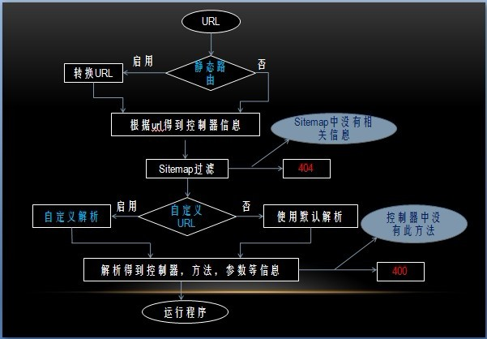

以b2c为例
此url为PHPINFO解析后的url

在sdb_site_modules数据库保存所有在site.xml中定义的controller,在site_router的构造函数中会获取到所有的记录
用以判断URL传过来的控制器是否真是存在
index.php/控制器-方法-参数1-...-参数N.html
index.php/passport-error.html 调用的是：passport这个控制器的error方法
在后台站点中可以设置静态路由，可以自定路由规则
这个重新构造路由规则是在继承site的情况下的一个重新构造，(index.php/控制器-自定义.html)这个控制器位置不能变。
service id是 site_router.$app。$app表示所要重新构造的app_id
<service id="site_router.content">
<class>content_service_router</class>
</service>
根据注册的service写好router类
一般需要重构的是gen_url和dispatch两个方法
<?php
/**
* ShopEx licence
*
* @copyright Copyright (c) 2005-2010 ShopEx Technologies Inc. (http://www.shopex.cn)
* @license http://ecos.shopex.cn/ ShopEx License
*/
class content_service_router
{
private $_enable = false;
function __construct()
{
$this->_enable = (app::get('content')->getConf('base.use_node_path_url') == 'true') ? true : false;
}//End Function
function enable()
{
return $this->_enable;
}//End Function
public function gen_url($params = array())
{
...
return $base_url . (($params['real']=='true') ? $url : kernel::single('site_router')->parse_route_static_genurl($url));
}//End Function
public function dispatch($query, $allow_name, $separator)
{
//$query：去除静态路由后的url,$allow_name：控制器的名字,$separator：连接符号
//可以自己直接参照default_dispatch进行解析
//如果不复杂可以把参数做解析成default_dispatch的参数在调用site_router
...
kernel::single('site_router')->default_dispatch($query, $allow_name, $separator);
}//End Function
}/
根据传入的PHPINFO调用对应的控制器并且控制页面的输出
拼接使用本路由的URL地址
$this->gen_url(array('app'=>'b2c','ctl'=>'members','act'=>'index'));